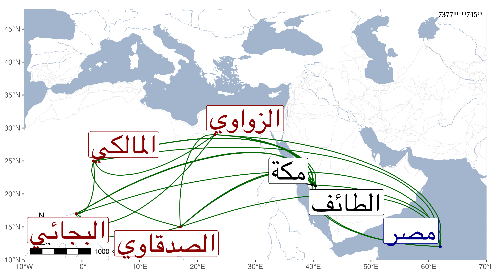

0902Sakhawi.DawLamic.ITO20230111-ara1.EIS1600.737711017450
Biography ID: 737711017450
921
محمد بن إبراهيم بن محمد بن عبد الرحمن بن يحيى بن أحمد بن سليمان ابن مهيب الصدقاوي الزواوي الأصل ثم البجائي المالكي نزيل مكة ويلقب سراجا . ولد سنة ست وأربعين وثمانمائة وقطن مكة دهرا قبل أبيه وبعده وناب فيها عن البرهان بن ظهيرة بالطائف ثم أعرض عنه ودخل مصر وغيرها ، وهو إنسان ساكن فيه فضيلة بل أوقفني على أشياء جمعها وتكرر تردده لي بمكة في سنتي ثلاث وأربع وتسعين واستفدت منه ترجمة أبيه وجده . ومات بعد انفصالنا عنه في رمضان سنة خمس وتسعين رحمه الله .
